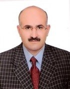

Mehmet Keskin

Prof. Dr. Mehmet Keskin
Özgeçmiş
EĞİTİM BİLGİLERİ
Doktora, ANKARA ÜNİVERSİTESİ, Sosyal Bilimler Enstitüsü, Temel İslam Bilimleri/İslam Mezhepleri Tarihi, 1997-2005
Yüksek Lisans, YÜZÜNCÜ YIL ÜNİVERSİTESİ, Sosyal Bilimler Enstitüsü, Temel İslam Bilimleri/İslam Hukuku, 1995-1997
Lisans, ANKARA ÜNİVERSİTESİ, İlahiyat Fakültesi, , 1982-1989
YAPTIĞI TEZLER
Yüksek Lisans, "İslam Hukuk Felsefesinde Maslahat-Zeria İlişkisi", YÜZÜNCÜ YIL ÜNİVERSİTESİ Sosyal Bilimler Enstitüsü Temel İslam Bilimleri/İslam Hukuku Haziran, 2006.
Doktora, "Eş'ariliğin Teşekkül Süreci "el-Eş'ari Dönemi"", ANKARA ÜNİVERSİTESİ Sosyal Bilimler Enstitüsü Temel İslam Bilimleri/İslam Mezhepleri Tarihi Aralık, 2005.
MESLEKİ ve İDARİ DENEYİMLER
Bölüm Başkanı, YÜZÜNCÜ YIL ÜNİVERSİTESİ İlahiyat, Din Kültürü ve Ahlak Bilgisi Eğitimi Bölümü, 13.03.2016 - Devam Ediyor
Senato Üyesi, YÜZÜNCÜ YIL ÜNİVERSİTESİ , , 10.05.2015 - Devam Ediyor
Yönetim Kurulu Üyesi, YÜZÜNCÜ YIL ÜNİVERSİTESİ İlahiyat, , 20.06.2010 - Devam Ediyor
Dekan Yardımcısı, YÜZÜNCÜ YIL ÜNİVERSİTESİ İlahiyat, , 20.09.2009 - 10.08.2014
Bölüm Başkan Yardımcısı, YÜZÜNCÜ YIL ÜNİVERSİTESİ İlahiyat, Temel İslam Bilimleri, 16.08.2009 - 21.08.2011
Akademik Kurul Üyesi, YÜZÜNCÜ YIL ÜNİVERSİTESİ İlahiyat, Temel İslam Bilimleri, 19.07.2009 - Devam Ediyor
Anabilim/Bilim Dalı Başkanı, YÜZÜNCÜ YIL ÜNİVERSİTESİ İlahiyat, Temel İslam Bilimleri, 19.07.2009 - Devam Ediyor
DİĞER DERGİLERDE YAYIMLANAN MAKALELER
Keskin M., "İmam Eş'ari ve Ehl-i Sünnet Mezhebine Katkısı", Yüzüncü Yıl Üniversitesi İlahiyat Fakültesi Dergisi, ss.1-19, 2016
Keskin M., "Zeydî İmam Kâsım b. İbrahim er-Ressî'ye (246/860) Göre Şiî Fırkaların Tasnifi", e-Şarkiyat İlmi Araştırmaları Dergisi, vol.7, pp.33-47, 2015 (Link)
Keskin M., "Ehl-i Sünnet ve Mu'tezile Makalat Geleneği "el'Eş'ari ve el-Belhi Örneği"", Yüzüncü Yıl Üniversitesi Sosyal Bilimler Enstitüsü Dergisi, ss.144-166, 2014
Keskin M., "Eş'ari Düşünce Sisteminde İman Anlayışı", Dicle Üniversitesi İlahiyat Fakültesi Dergisi, cilt.9, ss.91-108, 2007 (Link)
HAKEMLİ KONGRE / SEMPOZYUMLARIN BİLDİRİ KİTAPLARINDA YER ALAN YAYINLAR
Keskin M., "İmam Eş'ari ve Mezhebi Hakkındaki Galat-ı Meşhurlar Üzerine Bir İrdeleme", Uluslararası İmam Eş'ari ve Eş'arilik Sempozyumu, SİİRT, TÜRKIYE, 21-23 Eylül 2014, vol.2, pp.259-272 (Link)
Keskin M., "İlk Dönem Şafii-Eş’ari İlişkileri Üzerine Bir Değerlendirme", Uluslararası İmâm Şâfiî Sempozyumu, İSTANBUL, TÜRKIYE, 11-13 Nisan 2014, pp.345-368 (Link)
Keskin M., "Mevlana Hâlid-i Bağdadi'nin Ehl-i Sünnet Geleneğindeki Yeri", Uluslararası Mevlana Halidi Bağdadi Sempozyumu, VAN, TÜRKIYE, 11-12 Haziran 2010, pp.519-525
Keskin M., "İmam Eş'ari: Geleneğe Dönüş el-İbane ", Asrın İdrakı ve İslam Sempozyumu I, İSTANBUL, TÜRKIYE, 16-16 Haziran 2009, ss.69-83
KİTAP ve KİTAP BÖLÜMLERİ
Keskin M., "Dırar b. Amr ve kitabu't-Tahriş'inde İslam Mezhepleri", ilahiyat , ANKARA, 2016
Keskin M., "İmam Eş'ari'nin Hayatı", İmam Eş'ari Hayatı, Görüşleri ve Mezhebi, İ. Başkan, Ed., Plural Publications, Köln, ss.28-107, 2016 (Link)
Keskin M., "Mutezile'nin Beş Temel İlkesi/el-Usûlu'l-hamse (Kadı Abdulcebbâr)", Mutezile Gelen-Ek-i Klasik ve Çağdaş Metinler Seçkisi -I-, Recep ALPYAĞIL, Ed., İZ Yayıncılık, İstanbul, ss.20-38, 2014 (Link)
Keskin M., " İlk Dönem Siyasi ve İtikadi İhtilaflarında Hadis Kullanımı Kitâbu't-Tahrîş", Litera Yayıncılık, İSTANBUL, 2014 (Link)
Keskin M., "İmam Eş'arive Eş'arilik", Düşün Yayıncılık, İSTANBUL, 2013 (Link)
Keskin M., "İslam Mezheplerinin Kur'anî Referansları", Çeviri, Ahsen Yayınları, İSTANBUL, 2009
İlgili haberler
Yeni Doktor: Halit KARS
Prof. Dr. Mehmet Zeki İŞCAN danışmanlığında Halit KARS tarafından hazırlanan “ŞÂFİÎLİĞİN OLUŞUM SÜRECİ VE İTİKADİ MEZHEPLERLE İLİŞKİSİ” adlı doktora tezi; Prof. Dr. Mehmet KESKİN Prof. Dr. Hanifi ŞAHİN Prof. Dr. Mustafa MACİT Doç. Dr. Muhyetttin İĞDE hocalarım
Yeni Doktor: Esra GÜLNİHAL
Dicle Üniversitesi Sosyal Bilimler Enstitüsü öğrencisi Esra GÜLNİHAL, 29.01.2025 tarihinde Prof. Dr. Metin Bozan danışmanlığında hazırladığı “Teşekkül Sürecinde Eş'arilerin Tasavvufla İlişkisi (H. 3-5 Asırlar)" isimli doktora tezini Prof. Dr. Mehmet Keskin, Pr
Yeni Prof. Mehmet Keskin
Van Yüzüncü Yıl Üniversitesi İlahiyat Fakültesi'nden Mehmet KESKİN hocamız Profesör olarak atanmıştır. Kendisini tebrik ediyoruz. Kendisine, ailesine ve tüm camiamıza hayırlı olsun.
Yeni Doktor: Halide Rumeysa Küçüköner
Dicle İlahiyat'tan Halide Rumeysa KÜÇÜKÖNER, Mirza Gulam Ahmed ve Ahmedilerin Mirza Gulam Ahmed Telakkisi başlıklı teziyle 7 Aralık 2018 tarihinde danışmanı Prof. Dr. Metin Bozan ile Doç. Dr. Mehmet Keskin, Doç. Dr. Mehmet Bilen, Doç. Dr. Hayrettin Kizil ve Dr
Yeni Doçent: Mehmet KESKİN
Van Yüzüncü Yıl Üniversitesinden Mehmet KESKİN, 16.11.2017 tarihi itibarıyla doçent olmuştur. Tebrik ediyoruz. Kendisine, Fakültesine ve Mezhepler Tarihi camiasına hayırlı olmasını diliyoruz.